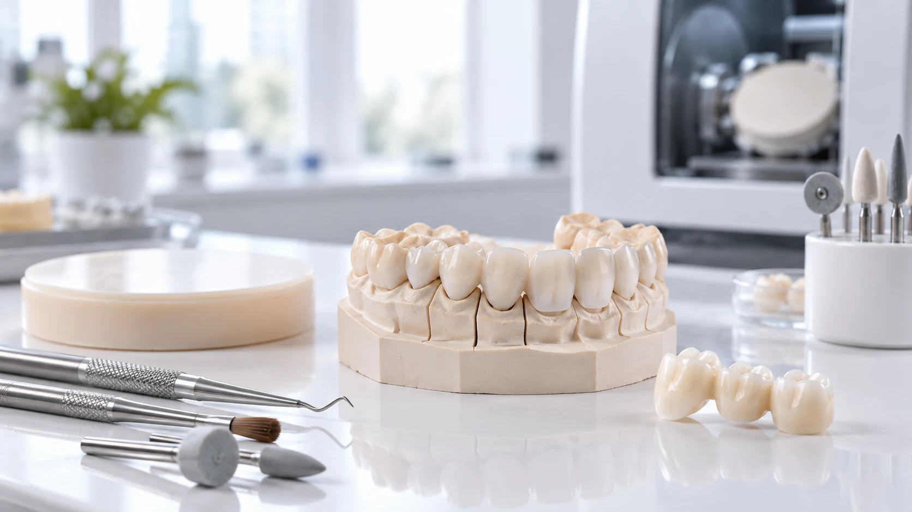

Coroane si punti provizorii
Pentru etapele temporare ale cazurilor protetice, pe baza preparatiilor si indicatiilor primite.
Provizorii pentru etapele protetice
Realizam restaurari provizorii in cadrul planului protetic transmis de medic, cu integrare in flux clasic sau digital si cu legatura clara catre etapa definitiva.

Etapa tranzitorie conteaza
In functie de planul medicului, restaurarile provizorii pot proteja preparatiile, pot sustine functia si pot oferi un reper pentru forma si organizarea cazului pana la restaurarea definitiva. Laboratorul adapteaza executia la datele transmise si la etapa protetica solicitata.
Pentru etapele temporare ale cazurilor protetice, pe baza preparatiilor si indicatiilor primite.
Proiectarea digitala permite corelarea formei cu ocluzia, spatiul disponibil si planul lucrarii definitive.
In reabilitarile complexe, provizoriile pot deveni un reper util intre planificare, validare si restaurarea finala.

Ce trebuie stabilit
Workflow conectat
Poate oferi reperul de forma pentru etapa provizorie.
Coreleaza datele digitale cu geometria provizoriului.
Etapizare pentru cazuri extinse si tranzitia catre lucrarea finala.
Trecerea catre materialul definitiv conform indicatiei medicului.
Intrebari frecvente
Pagina se refera la restaurari provizorii. Alegerea materialului si durata utilizarii sunt stabilite in cadrul planului clinic al medicului.
Da, atunci cand setul de date este complet si compatibil cu fluxul de proiectare.
Da, atunci cand medicul doreste folosirea wax-up-ului ca reper pentru forma provizorie.
Putem analiza cazurile pe implanturi in functie de sistem, componente, etapa clinica si datele disponibile.
Ai nevoie de o etapa provizorie?